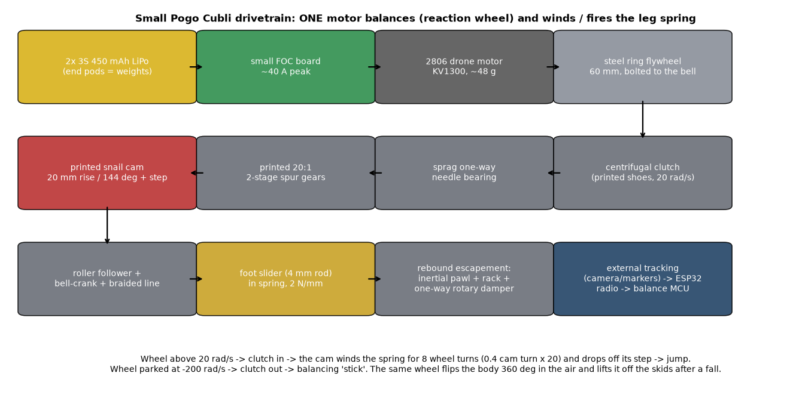
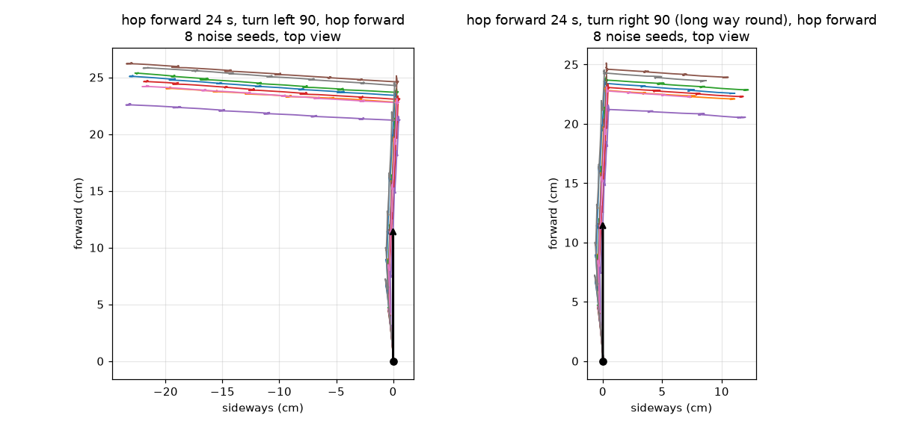
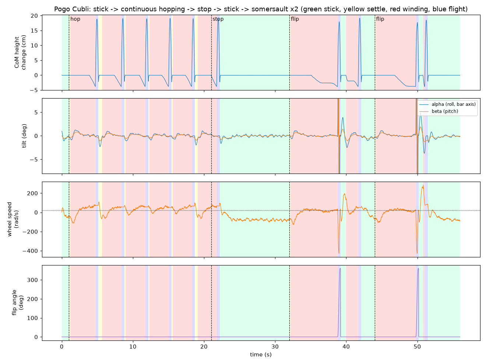
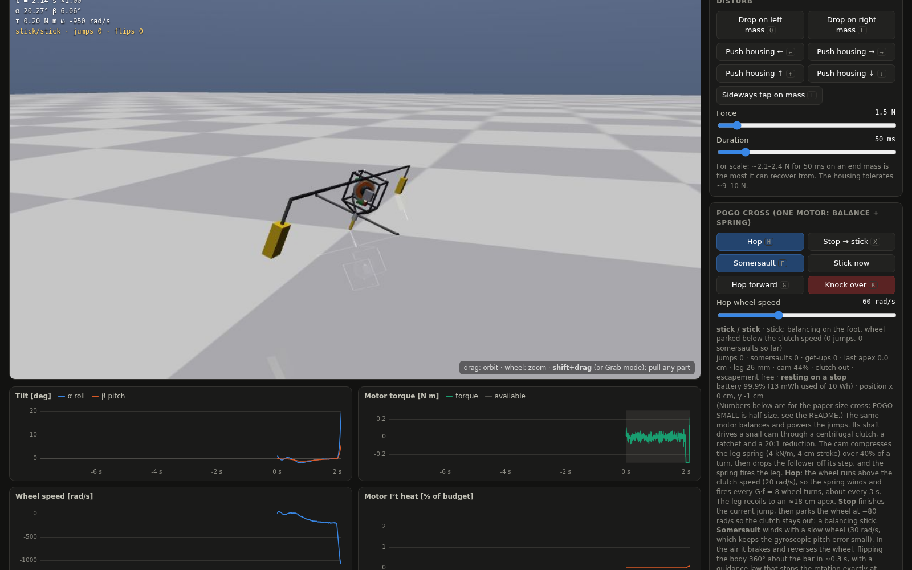
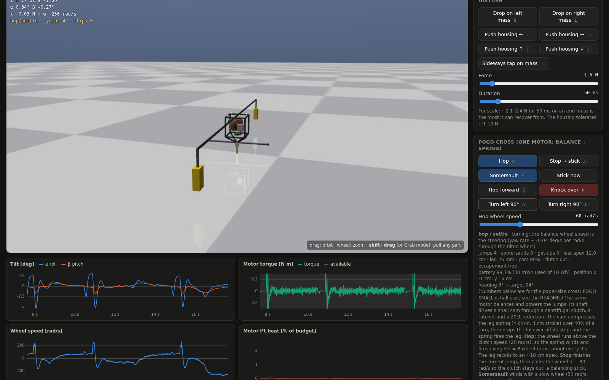
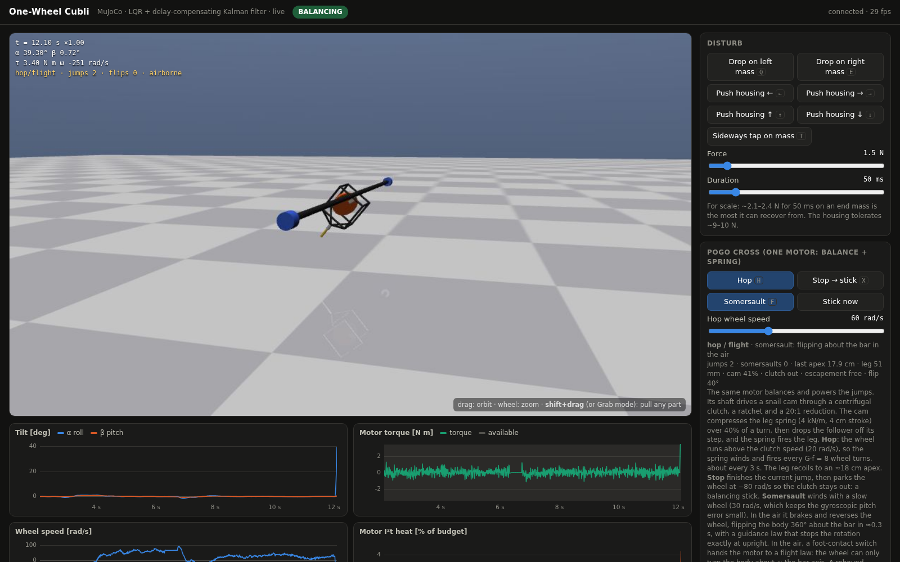

A robot that balances on a single point using one motor — and uses that same motor to wind and fire a pogo spring. It started as a faithful replica of ETH Zürich's One-Wheel Cubli and ended as a 0.3 kg, ≈$109 design built from drone parts.
Every step below is a separate experiment in the repo, each with its own script, test and write-up.
One reaction wheel at 45° steers two tilt axes, because the long cantilever makes pitch much slower than roll. Tuned controller recovering from drops and pushes.
Spin the wheel up to 420 rad/s, then dump the momentum: the cube rolls a full turn about its bar. Jumping back up onto the tip stays out of reach for one wheel.
The paper's cube on a spring leg. The balance motor winds a cam through a clutch; the spring fires it ≈18 cm up; a 360° flip lands 16/16 times.
Half size, drone parts, batteries as the end weights. Hops, somersaults, gets up from its kickstands, hops forward holding heading and turns 90°.
The motor drives a flywheel that balances the body. The same shaft, through a clutch that only engages above 20 rad/s, winds the leg spring. The wheel's speed alone decides whether it balances, hops, or steers.

The simulation is built from this list: the mass, centre of mass and inertia are summed part by part, and the motor model uses its KV, winding resistance, battery voltage and driver current limit. Parts are representative classes with typical catalogue values — check against the exact part you buy.
| Part | g | $ | Notes |
|---|---|---|---|
| housing: printed PETG cube 75 mm + 2 CF plates | 25 | $4 | |
| tip pyramid struts (printed) | 4 | — | |
| motor stator + mount | 28 | $20 | 2806-class drone outrunner, KV1300 (~48 g, e.g. for 6-7 in props) |
| FOC motor board (placed opposite the gearbox to trim the CoM) | 10 | $20 | small FOC board, ~40 A peak (e.g. ST B-G431B-ESC1 discovery kit or a SimpleFOC-type board) |
| ESP32-C3 (radio link for the external tracking) + IMU | 5 | $6 | |
| winding drivetrain: clutch, sprag bearing, 20:1 printed gears, cam, follower | 16 | $8 | |
| leg: guide, 2 bushings, spring, escapement (pawl, rack, rotary damper) | 12 | $8 | |
| cantilever: CF tube 8 mm x 0.9 m | 15 | $6 | |
| pod drop strut L (CF rod) | 2 | — | |
| pod drop strut R (CF rod) | 2 | — | |
| battery pod L (3S LiPo + printed clip) | 44 | $9 | 3S 450 mAh 75C LiPo (~57x31x19 mm, ~40 g) |
| battery pod R (3S LiPo + printed clip) | 44 | $9 | 3S 450 mAh 75C LiPo (~57x31x19 mm, ~40 g) |
| roll skid +y (CF rod, rubber tip) | 2 | $1 | |
| roll skid -y (CF rod, rubber tip) | 2 | $1 | |
| harness, XT30 connectors, switch | 8 | $4 | |
| tracking markers / AprilTag plate | 2 | $1 | |
| flywheel: steel ring OD60/ID48 x 6 mm (bolted to the motor bell) | 53 | $3 | I = 40.7 g cm^2 incl. rotor bell |
| foot slider + rubber foot | 8 | $1 | |
| bearings, screws, spring, line, glue | 0 | $8 | |
| Total | 302 | $109 | span 0.9 m |
Sensor noise, delays, motor torque–speed limits and thermal derating are all simulated. State comes from external tracking (camera + markers) and a foot load cell.
| Small robot | Passed | Detail |
|---|---|---|
| Stand still as a “stick” | 8/8 | tilt stays under 1.5° |
| Hop continuously, then stop | 8/8 | 8–8 hops per 20 s, apex ≈ 12 cm, 0–1 jumps after “stop” |
| Somersault in the air and land | 8/8 | 360° about the bar in ≈ 0.3 s |
| Get up after a fall | 10/11 | from resting on a skid or battery pod, up in 0.3–4.3 s |
| Get up after being knocked over | 9/10 | 10 pushes of 0.6–1.5 N from 5 directions |
| Hop forward, holding heading | 8/8 | 25–29 cm straight ahead in 30 s, ≤ 1 cm sideways, 0 skid touches |
| Forward → turn left 90° → forward | 8/8 | second leg at 84…86° |
| Forward → turn right 90° → forward | 8/8 | second leg at -94…-87° (turns the long way round) |


The repo ships a live web viewer running the real MuJoCo plant and controllers: drag to orbit, shift-drag to pull on any part, buttons for every behaviour, and live charts of tilt, torque, wheel speed and motor heat.



git clone https://github.com/U4AR/one-wheel-cubli-mujoco.git && cd one-wheel-cubli-mujoco python -m venv .venv && . .venv/bin/activate && pip install -r requirements.txt MUJOCO_GL=egl python app/server.py # open http://127.0.0.1:8765, Plant → Layout → POGO SMALL python scripts/pogo_small.py # parts list + every behaviour on 8 seeds → results/pogo_small.json python -m pytest -q tests # 19 tests